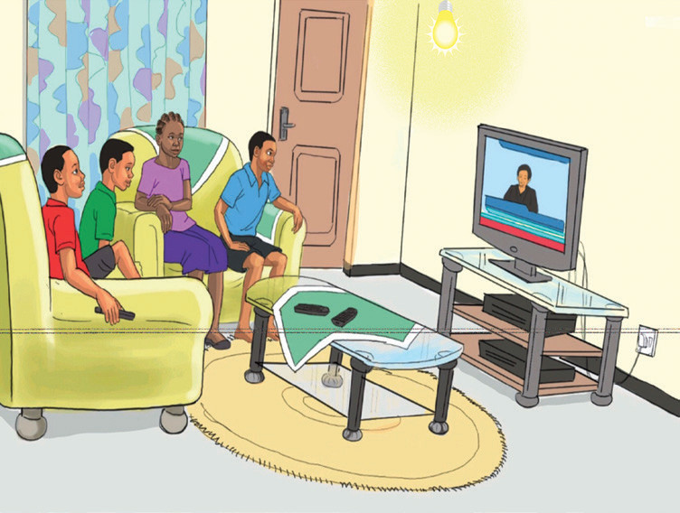

Mabadiliko ya nishati ya umeme
Nishati ya umeme inaweza kubadilishwa kutoka nishati moja kwenda nyingine kutegemea kifaa kilichotumika. Kwa mfano, kurunzi hutumia nishati ya umeme kutoka kwenye selikavu na kutoa nishati ya mwanga na joto.
Uhusiano wa nishati ya umeme na nishati ya mwanga
Nishati ya mwanga inaweza kuonekana kutoka kwenye vyanzo mbalimbali kama vile jua. Pia, huweza kutokea kwa kubadilisha nishati moja kwenda nishati nyingine. Mfano, nishati ya umeme hubadilishwa ili kupata nishati ya mwanga. Nishati hii huweza kuonekana inapokutana na vitu mbalimbali vinavyoruhusu na visivyoruhusu mwanga kupenya.
Chunguza kwa makini matendo yanayofanyika katika Kielelezo namba 16(a), (b) na (c), kisha fanya Kazi namba 8.

Kielelezo namba 16: Matumizi ya nishati ya umeme